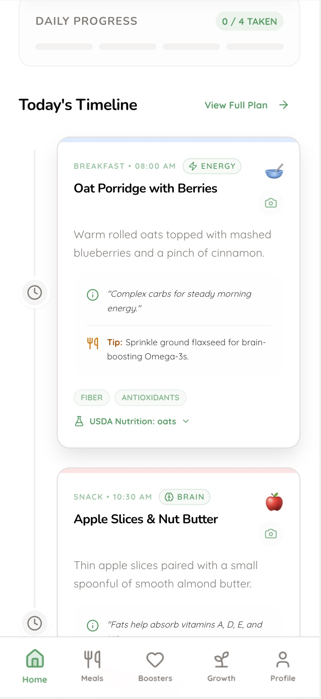
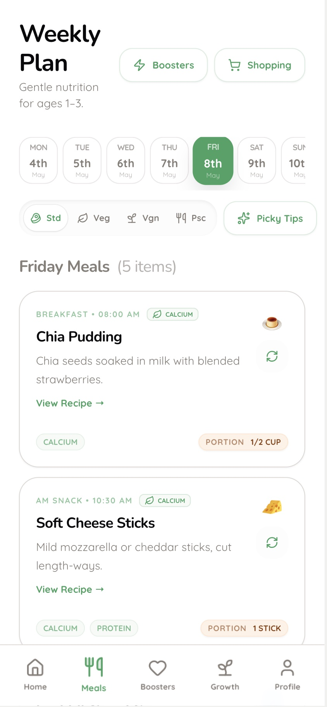
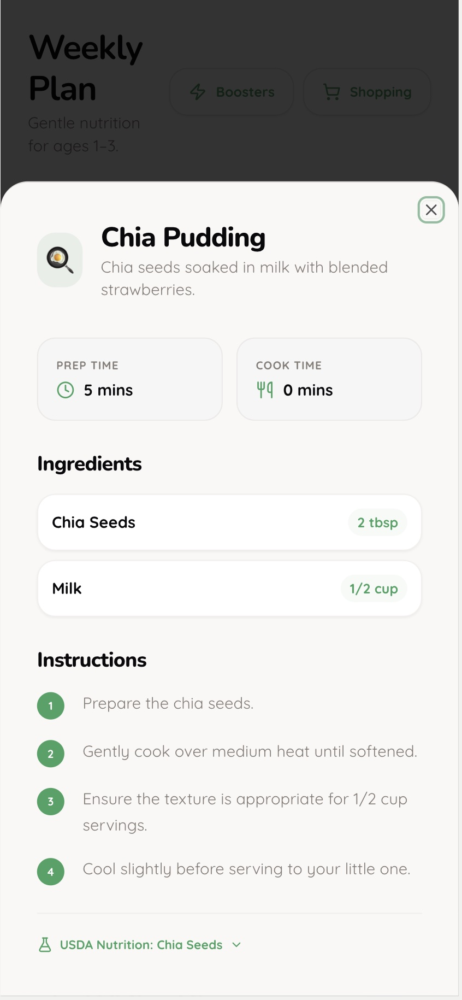
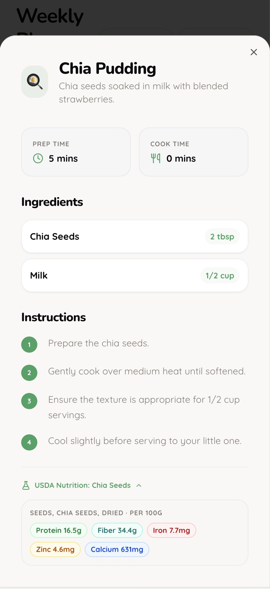
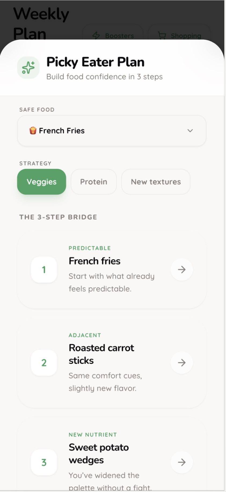
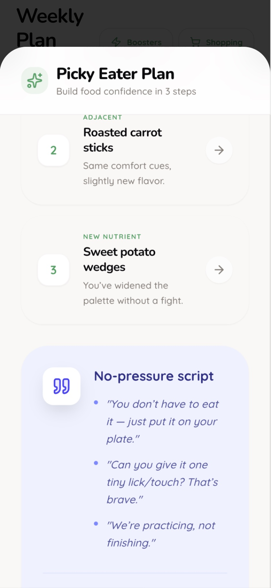
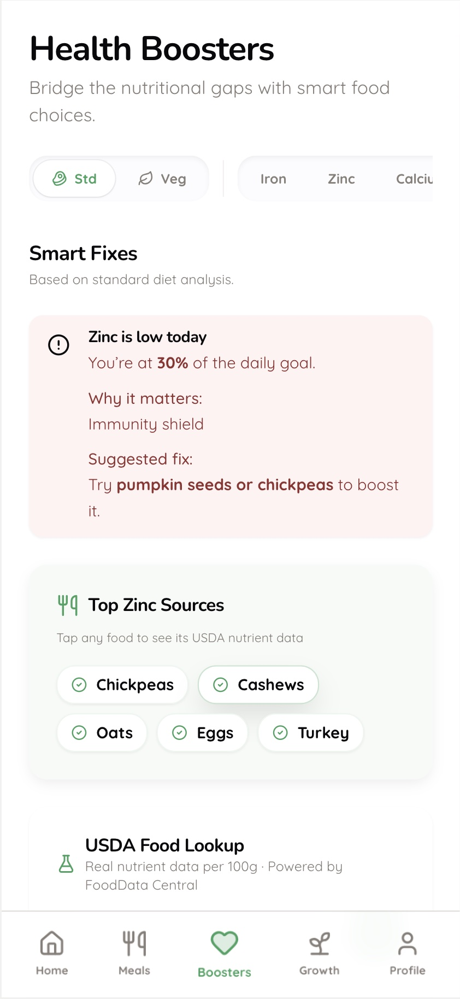

MomInsight — From Prompt to Working Prototype
An AI-powered meal planning and nutrition app for mothers of young children — conceived, defined, and built solo using modern AI tooling. Concept to working prototype in one sprint.
The Problem
Parents are overwhelmed by conflicting nutrition advice from paediatricians, social media, and family. They struggle to apply general guidance to a specific child with specific preferences, restrictions, and developmental needs.
Research shows up to 50% of toddlers go through picky eating phases. Parents know children typically need 10–15 exposures to a new food before accepting it — but tracking those exposures while managing daily life is nearly impossible. Most parents give up after two or three rejections.
Information overload — Conflicting advice from paediatricians, online resources, and family. Parents can't filter signal from noise for their specific child.
Picky eating — No system to track food exposures, adapt gradually, or know when to try again. Most parents default to the same five meals.
Mental load — Simultaneously balancing nutrition, dietary restrictions, budget, prep time, and variety across days and weeks is cognitively exhausting.
No visibility — Parents can't see whether their child is actually meeting nutritional requirements. They oscillate between complacency and anxiety without data.
Research & Definition
I drafted five Reddit post variations targeting different mum communities — each written to surface a specific pain point without promoting a solution. The posts were designed to validate whether the problem was real and widespread before building anything. Reddit's subreddit restrictions prevented posting.
Each variation targeted a distinct user type: the overwhelmed first-time mum, the picky eater parent, the dietary-restrictions parent (vegetarian/vegan families), the time-strapped working parent, and a casual validator open question. The responses each version would attract would reveal which pain point had the most urgency.
Sarah — First-time mum — Anxious about getting nutrition right from the start. Needs reassurance and clear, actionable guidance, not more information to parse.
Priya — Managing multiple children — Coordinating different ages, different preferences, different developmental stages simultaneously. Needs a system, not just a recipe.
Michael — Dietary-conscious dad — Raising children vegetarian or vegan. Constantly worried about iron, B12, protein. Needs data-backed confidence, not guesswork.
I wrote a full PRD covering problem statement, target market, core feature requirements, technical architecture, monetisation strategy, and a phased roadmap. The PRD preceded the build.
Key product decisions made at this stage: freemium model at $9.99/month, 5 core features for MVP, USDA nutrition guidelines as the data backbone, and a picky eater tracking system as the primary differentiator versus existing meal planning apps.
How It Was Built
Claude was used to structure the product thinking — framing the problem, writing the PRD, defining personas, and drafting the research posts. Replit was used to build and deploy the working prototype. The entire stack — product definition to live app — was built without a separate development resource.
The prototype is a fully functional web app: routing, state management, dietary mode switching (vegetarian/non-vegetarian), USDA nutrition data integration, meal logging via photo, and a picky eater tracking system.
Problem definition → User research framework → PRD → Feature scoping → App architecture → Frontend build → Nutrition data integration → Picky eater system → Deployment.
The Product
The home screen shows today's meals — breakfast, lunch, snack, dinner — personalised to the child's age, dietary mode, and nutritional needs. Parents can mark a meal as eaten, swap it for an alternative, or log it via photo. The AI adjusts tomorrow's plan based on what was actually consumed today.
Today's meal plan — mark eaten, swap, or log via photo

Meal detail — nutrition focus tags per meal
The weekly view shows the full meal plan at a glance with USDA nutrition tracking integrated. Parents can see whether their child is on track for key nutrients — iron, calcium, protein, fibre — across the week, not just per meal. Dietary mode (vegetarian/non-vegetarian) is switchable at any time and the plan regenerates accordingly.

Weekly plan — USDA-aligned nutrition tracking by day
Each meal links to a full recipe — ingredient list, prep time, nutritional breakdown, and age-suitability. Recipes are tagged by nutritional focus (brain, energy, growth, immunity) so parents understand why a meal is in the plan, not just what to cook.

Recipe detail — ingredients, prep time, nutrition

Recipe — age suitability and nutrition focus tags
The picky eater system tracks every food offer and rejection. It uses bridge food logic — if a child accepts sweet potato, the system suggests other orange vegetables at the next appropriate interval. Parents can see a child's exposure count per food, what's been rejected, and what's next to try. The 10–15 exposure problem becomes manageable.

Picky eater tracker — exposure count and status per food

Bridge food suggestions — gradual palette expansion
The health screen flags nutrient gaps and suggests specific foods to address them. If calcium is low this week, the app surfaces three quick ways to add it — not a generic warning, but actionable food options matched to the child's preferences and dietary mode.

Health boosters — targeted food suggestions for nutrient gaps
What's Next
The next phase is structured user testing with 10–15 mothers across the three personas. Key questions: does the daily plan feel manageable or overwhelming? Does the picky eater tracker change behaviour? Is USDA data reassuring or anxiety-inducing? The prototype is built to be put in front of real users immediately.
Onboarding — The child profile setup needs to feel effortless. Right now it collects necessary data; it needs to feel like a conversation, not a form.
Tone — The app should reduce anxiety, not increase it. Every nutrient gap notification needs to be framed as an opportunity, not a failure. This requires copy testing.
Autonomy controls — The PRD envisions adjustable AI autonomy per feature. The prototype doesn't yet surface this — it's the highest-value design problem remaining.
For enterprise product design work, see
← Case Study B — From Manual Processes to Workflows